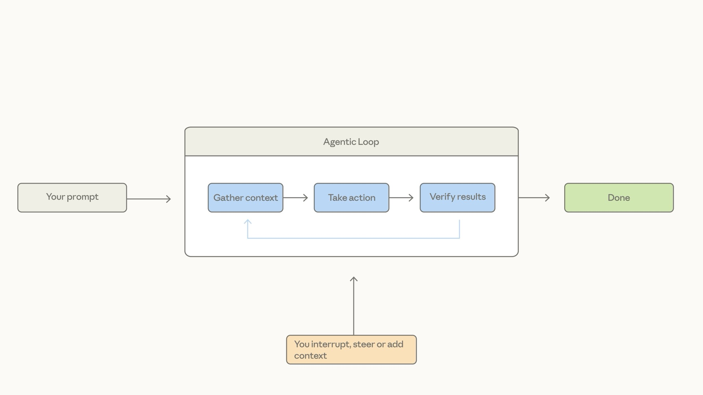
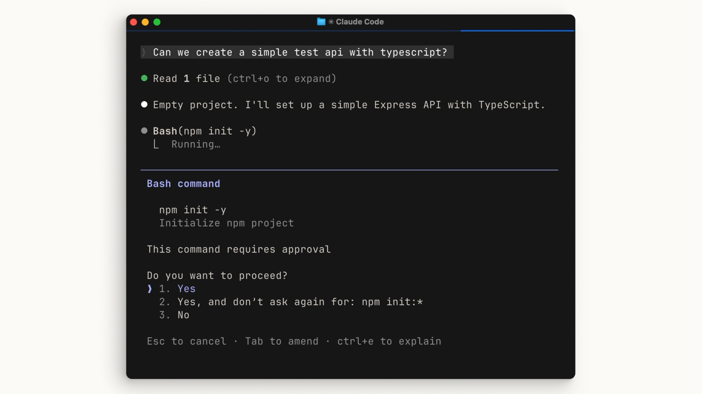

Как работает Claude Code
Чему научитесь
Видео 2:50 и текст урока
К концу урока вы сможете:
- описать агентный цикл Claude Code — сбор контекста, действие, проверку результата — и способы в него вмешаться;
- объяснить, зачем Claude Code нужны инструменты и что происходит, когда заполняется контекстное окно;
- различать режимы разрешений Manual, Auto-accept, Plan mode и Auto mode.
Видео и текст урока.
Claude Code устроен не так, как обычные чат-приложения. Понимание того, как он работает изнутри, поможет пользоваться им эффективнее.
Агентный цикл
Работу Claude Code проще всего объяснить с помощью агентного цикла:
- Вы вводите промпт в Claude Code.
- Claude собирает нужный ему контекст, обращаясь к модели. Модель возвращает текст или вызов инструмента, который Claude Code может выполнить.
- Он действует — например, правит файл или запускает команду.
- Он проверяет результат и решает, достигнуто ли то, ради чего вы писали промпт.
- Если да, Claude заканчивает работу и ждёт следующего промпта. Если нет, он возвращается к началу цикла и пробует снова, пока результат не станет полным и проверяемым.
На любом шаге цикла вы можете добавить контекст, прервать модель или скорректировать её курс, чтобы помочь ей достичь вашей цели.

Контекст
У Claude есть контекстное окно: от него зависит, какой объём разговора, содержимого файлов, вывода команд и прочего Claude может удерживать и использовать. Когда этот предел достигнут, Claude Code сжимает разговор — сам определяет, что можно убрать или кратко пересказать, чтобы контекстное окно снова уменьшилось до рабочего размера.
Инструменты
Инструменты — основа работы агентов. Большинство ИИ-ассистентов просто получают на вход текст и выдают текст. Инструменты позволяют Claude Code решать, когда выполнить код, чтобы приблизиться к завершению задачи. Это может быть инструмент чтения файлов, инструмент веб-поиска или любая из множества других возможностей. Claude Code опирается на понимание смысла, чтобы решить, когда вызвать инструмент и как распорядиться его результатом.
Разрешения
В Claude Code есть несколько режимов разрешений:
- Manual: Claude спрашивает явного разрешения, прежде чем править файл или запускать shell-команду.
- Auto-accept: без вопросов правятся файлы и выполняются типовые команды файловой системы, такие как
mkdir,mvиrm. Для остальных команд по-прежнему нужно одобрение. - Plan mode: Claude читает файлы и запускает shell-команды, чтобы изучить проект, но не правит ваш исходный код; прежде чем браться за работу, он составляет план действий.
- Auto mode: Claude работает без рутинных запросов разрешения, а классификатор в фоне проверяет большинство действий. Его задача — блокировать необратимые и разрушительные действия, а также действия, направленные за пределы вашего окружения. Если что-то заблокировано, Claude обычно находит более безопасный путь или просит у вас разрешения.
В каком режиме начинается новая сессия, зависит от версии Claude Code и ваших настроек.

npm init -y.Всё это задаётся в файле настроек. Будьте осторожны с пропуском разрешений: если дать Claude Code полную свободу запускать команды, ошибку будет труднее поймать до того, как она случится.
Итог
Claude Code объединяет несколько агентных идей: агентный цикл, управляемое контекстное окно, инструменты и настраиваемые разрешения — и всё это прямо в вашем терминале. Он умеет читать вашу кодовую базу, действовать и проверять собственную работу. Именно этим он принципиально отличается от окна чата.
Дальше
Следующий урок — «Установка Claude Code»: как поставить Claude Code и где с ним работать — в терминале, в IDE, в приложении Claude Desktop и в вебе.
Оригинал урока: How Claude Code works.